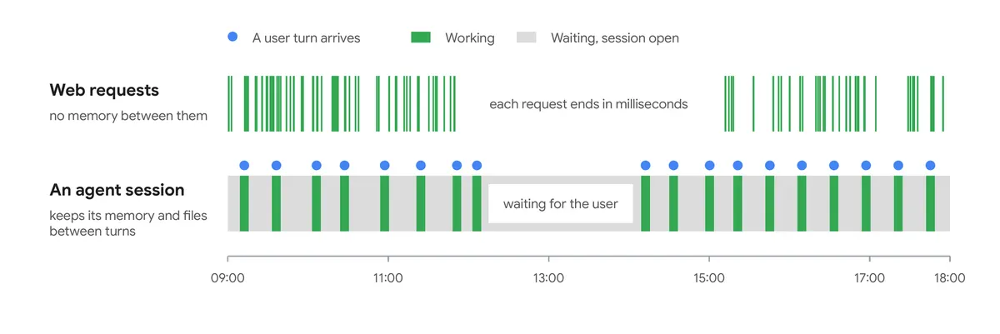
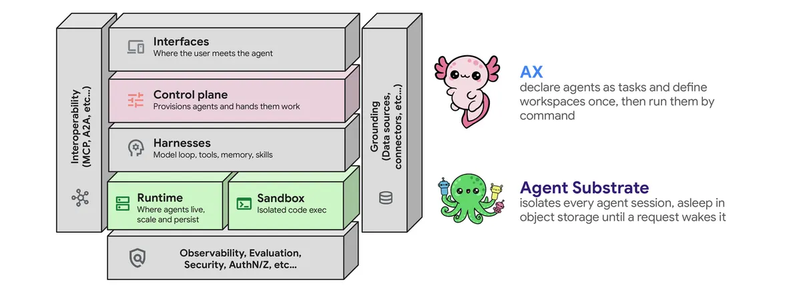

工作階段計價：代理的等待時間也要付錢
導讀原文：Agents are sessions, not requests: size GKE node pools for AI agent sessions（Google Developers Blog，容量規劃方法文；以自家成本模型比較 GKE 上三種跑 coding agent 的方式，並交代 Agent Substrate 與 AX 的分工）
代理的工作階段整天空著等 prompt，按流量擴充等於替等待買機器；Agent Substrate 把閒置沙箱快照進物件儲存，但只在 prompt 不密時划算。
一整個工作日開著，卻只工作兩成
原文是容量規劃方法文，前提是讀者懂 Pod 與節點池；整篇的帳單都出自同一份成本模型，不是實測。
原文先把兩種負載並排。web request 毫秒結束，伺服器什麼都不留，於是 Kubernetes 按流量擴充：請求變多，Pod 就變多。
coding agent 的工作區不同。它開一整個工作日，prompt 之間留著記憶與檔案，而且只有 prompt 到了才動。

原文引 GitHub Copilot agent trace 研究（Banruo Liu 等人）：典型工作階段裡，代理約 80% 時間在等使用者的下一個 prompt。
一個 turn，也就是一個 prompt 加上代理對它的完整回應，平均要 396.3 秒的代理工作時間。
把數字攤到一個工作日：每小時 2 次 prompt、8 小時（原文的假設），代理實際只工作 22%，等待佔 78%。
這兩組數字合起來只說明一件事：工作階段的成本主體是閒置，不是運算。
若每個工作階段獨佔一台機器，那 78% 就是你付的錢。這是全文的計價前提，不是形容詞。
兩種常見答案，都留不住「狀態加機器」
原文說團隊通常二選一，而這兩個選項在 web app 都很好用。第一個是每工作階段一個 Pod：狀態留住了，但 1 vCPU、1 GiB 整天佔著。
換算下來，c3-standard-4 節點扣掉 GKE 的保留可放 3 個這種 Pod；100 個 coding agent 需要 34 個節點、約每月 1,288 美元。
第二個是 prompt 之間把 Pod 縮到零：節點空出來，持久磁碟區上的檔案還在，但行程與記憶體不留，下一個 prompt 起一個新的代理行程。
| 跑法 | 工作階段狀態 | 行程與記憶體 | 100 個 agent 的節點／月費 |
|---|---|---|---|
| 一階段一 Pod | 全留，醒著也佔著 | 整天佔 1 vCPU／1 GiB | 34 個，約 USD 1,288／月 |
| prompt 間縮到零 | 只留持久磁碟區的檔案 | 每次重起新行程 | 工作時才佔（原文未計價） |
| parking （Agent Substrate） | 工作階段不關，動的是沙箱 | 快照後在暖池還原 | 15 個，另加 1 個控制面節點 |
→ 可橫向滑動
本站整理自原文成本模型：100 個 coding agent、Google Cloud us-central1 牌價、2 分鐘閒置逾時；不是實測帳單。
原文要的是第三條路：保留工作階段，趁它等待時把機器還回去。parking 動的是沙箱，不是交談。
機制是 SuspendActor：把閒置 actor 快照進物件儲存、釋放 worker，下一個請求在任何暖池 worker 上把它還原。
worker 是可重用的沙箱，來自暖池的 Kubernetes Pod，一個 worker 可同時放多個 actor；密度就是這樣拉起來的。

AX 回答的是「代理是什麼、知道什麼」：Task 說跑什麼（image、command、limits），Workspace 說知道什麼（repos、檔案）。
今天 ax suspend 只用磁碟區快照保住 /workspace：檔案回來，行程重起；Agent Substrate 還原的是整個 actor。
安全順帶一提：gateway 依 actor 身分加憑證、管進出流量，代理本身不持有 API key。
原文另註：Agent Substrate 1.0 已在 GKE 正式可用；gVisor、Agent Substrate 與 OpenRL 三項也在 2026 年 11 月捐入 CNCF（AX 不在其中）。
什麼時候別 park：prompt 很密，或已經 overcommit
原文最反直覺的一段：parking 的效益取決於等待佔比。到了每小時 4 次 prompt，代理工作 44%，暖池要 27 個節點，只省 4%。
交叉點約在每小時 4.5 次 prompt。原文建議先從 gateway log 撈一週的 prompt 率，用最忙的那一小時來比。
本站重繪，非原文圖；節點數出自原文成本模型（100 個 coding agent、us-central1 牌價）。原文未主張這三格窮盡所有情況。
parking 還有兩個變數是你自己決定的。第一，誰呼叫 suspend：Agent Substrate 不會自己暫停閒置 actor（issue #424）。
得靠 harness 或前面那層服務，在逾時後打 suspend API。
忘了打，閒置 actor 就一直佔著 worker；worker 全被佔滿時，新請求預設等 5 秒後回 HTTP 503。
原文的池子大約每 3,500 個 turn 才滿一次；換成每小時 2.5 次 prompt，同樣 15 個節點就有 3% 的 turn 撞上。
第二，宣告多少容量：actor 按 CPU 與記憶體上限計價，成本模型把池子容量設成節點實有值，所以每個 actor 都拿得到完整上限。
overcommit 會直接反轉結論。Pod 若 request 0.25 vCPU、limit 1 vCPU，一節點可塞 12 個。
同樣 100 個 agent 只要 9 個節點，比 parked pool 還少。
代價兩邊一樣：鄰居在 build、test 時，代理一起變慢。原文說要比就比同樣的 CPU 保證，否則比的是兩件事。
原文把 4.5 次當對照點，不是當門檻：真正的輸入是你自己的 prompt 率，這也是作者說最沒把握的參數。
最後是規模。控制面成本對 10 個或 1,000 個工作階段相同，parking 約從 37 個 coding 工作階段開始划算，聊天助理則是 13 個。
自動擴充跟的是 worker Pod，不是已暫停的 actor，下班後要用排程工作把池子縮到零；跑滿 730 小時的池子，帳單約是一階段一 Pod 的兩倍。
帶走三件事
按工作階段算容量，別按流量算。等待時間不會自己變成零。
先量最忙一小時的 prompt 率。超過約 4.5 次，parking 就不划算。
比成本要同基準。CPU 保證不同，parking 的優勢會消失。
導讀為本站編輯內容（AI 摘解自原文與館藏重點，非官方文件）；引述數據出自原文成本模型（100 個 coding agent、Google Cloud us-central1 牌價），非實測帳單；前兩張為原文圖（Google Developers），圖解 A、B 為本站整理。內容經對照原文的獨立事實審查後發布。